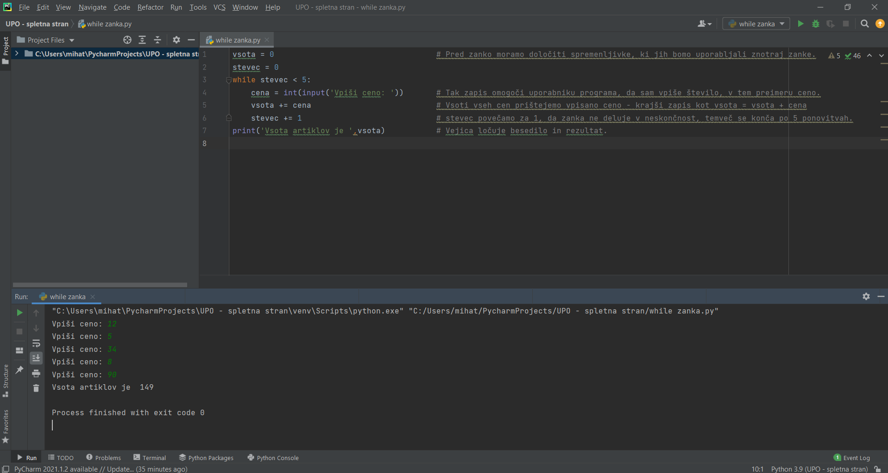
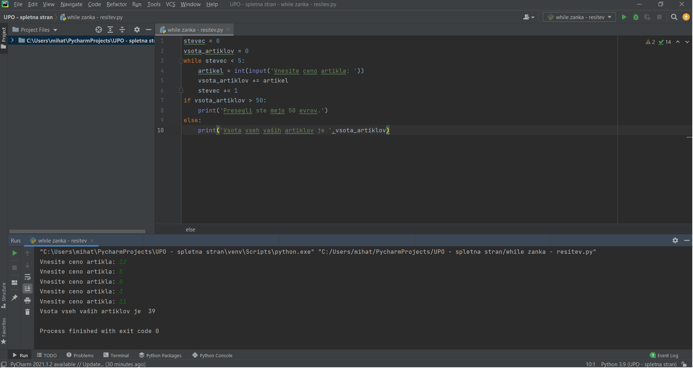

While zanka zopet v imenu skriva svojo vlogo in sicer while pomeni medtem, zanka pa da se neka dejavnost ponavlja. Torej lahko ugotovimo, da while zanko uporabljamo, ko želimo nekaj ponavljati določeno število krat. Seveda je potrebno določiti spremenljivko, ki bo štela ponovitve in bo omogočila ustavitev zanke ob želenem času oz številu ponovitev.
Določimo najprej spremenljivko z imenom stevec in jo pred zanko nastavimo na 0. Nato zapišimo, da želimo 5 ponovitev zanke. To lahko zapišemo tako: while stevec (manjši od) 5: Pomembno pri tej zanki je, da spremenljivko 'stevec' spreminjamo znotraj zanke in sicer tako, da ji prištejemo 1 za vsak 'sprehod' čez zanko, sicer se bo zanka ponavljala v neskončnost. To lahko tudi poskusite. Napišite zanko, vendar ne spreminjajte vrednosti stevca in boste videli do česa pride. Ker seveda hočemo program, ki se enkrat konča moramo torej biti pazljivi na pravilno določanje spremenljivke. Ko se zanka konča, lahko seveda izpišemo rezultat. Na sliki je primer programa z while zanko, ki izpiše skupno ceno 5 artiklov in na koncu ceno izpiše. Program je napisan tako, da lahko uporabnik sam vnese cene posameznega artikla, program pa mu nato vrne vsoto vseh artiklov. Na sliki si lahko tudi pogledate primer while zanke.
Naloga: Kupec vam je povedal ceno 5 izbranih artiklov, vi pa si olajšate delo tako, da cene vnesete v program, ki ste ga sami napisali. Kako boste zapisali program, da boste dobili pravilno vsoto. Ker pa kupec nima več kot 50 evrov, vas je prosil, če ga opozorite, da je presegel mejo.
Rešitev:
Če razumete delovanje while zanke, se lahko sedaj posvetite še for zanki.